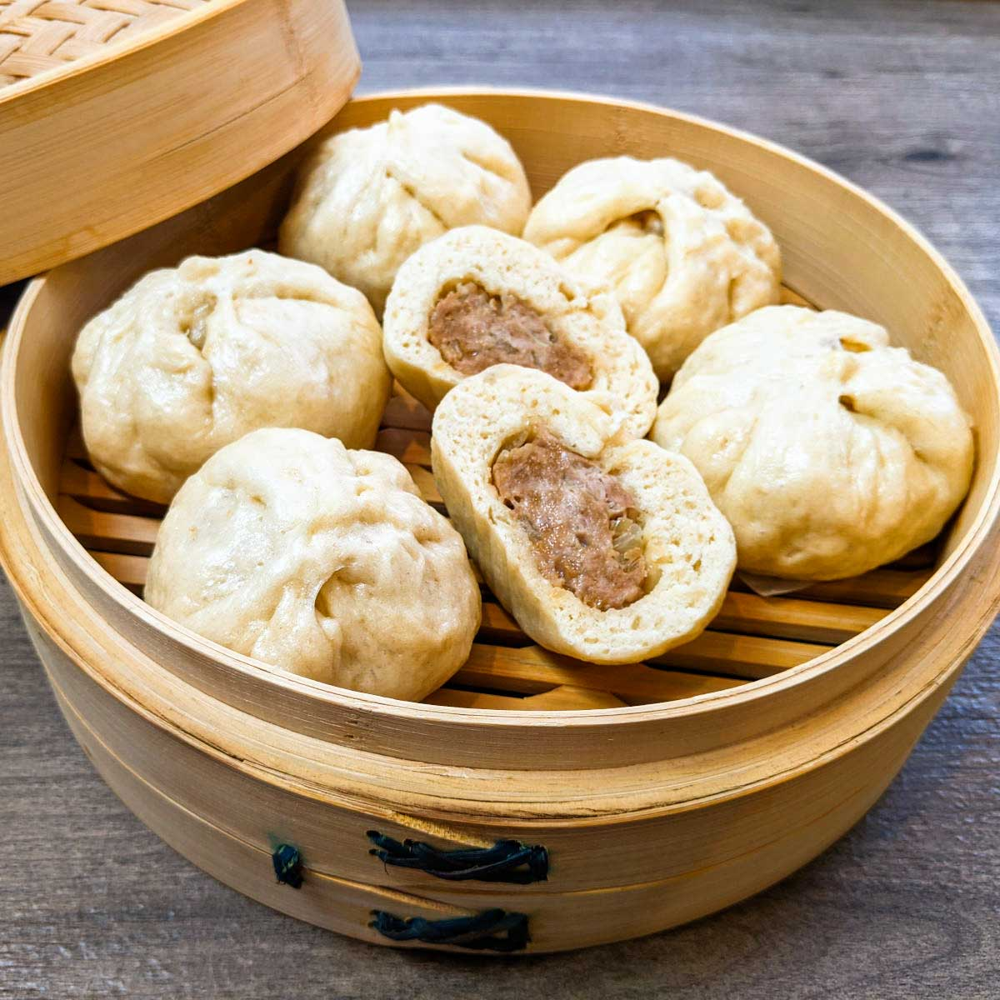

Bolinho Nikuman

Nikuman é o nome japonês do baozi chinês feito de massa de farinha e recheado com carne de porco moída cozida, carne bovina ou outros ingredientes. É um tipo de chūka também conhecido em inglês como pãezinhos de porco. Os Nikuman são cozidos no vapor e frequentemente vendidos como comida de rua.
Ingredientes:
- 2 un de Shitake
- 250 g de Farinha de trigo
- 100 g de Repolho
- 150 g de Carne suína moída
- 130 ml de Dashi do shitake
- 1 colher de chá de Fermento químico
- 1 colher de chá de Shoyu
- 1 colher de chá de Molho de ostra
- 1 colher de chá de Óleo de gergelim
- 1 colher de chá de Amido de milho
- 1 colher de chá de Gengibre ralado
- Sal e pimenta do reino a gosto
- Açúcar
- Alho Poró
Modo de Fazer:
- Coloque as 2 unidades de shitake em uma tigela e cubra com água fervente e deixe descansar por 20 minutos; Após esse tempo escorra-os reservando 130ml da água (o Dashi).
- Pique os Shitakes em cubos bem pequenos e reserve.
- Em um recipiente adicione a farinha de trigo, o fermento químico e biológico, 4 colheres de chá de açúcar, um pouco de sal, e, o óleo de gergelim, depois misture.
- Adicione o dashi e mexa bem até a massa ficar solta e consistente.
- Sove a massa por 10 minutos e, coloque-a em um recipiente coberto e deixe-a em banho maria crescendo por 30 minutos.
- Para o recheio, deixe o repolho cozinhar a vapor por 3 minutos; e, pique o repolho e o alho poró deixando-os bem fininhos.
- Tempere a carne suína com sal e pimenta do reino à gosto; adicione também 1 colher de chá de açúcar e, os molhos shoyu e ostra, o óleo de gergelim. Misture bem!
- Coloque o amido de milho enquanto mistura a carne e os temperos, depois adicione o gergelim, o repolho, o shitake e o alho poró, depois de misturar divida em 8 porções.
- Pegue a massa do pão, deixe-a em forma de cilindro e corte em 8 pedaços, fazendo bolinhas com a massa, e deixe descansar por 10 minutos.
- Abra as massas e adicione o recheio, fechando-as juntando suas extremidades.
- Coloque-as em cima de um pedaço de papel manteiga e deixe no vapor por 30 minutos; Está pronto! Bom apetite!